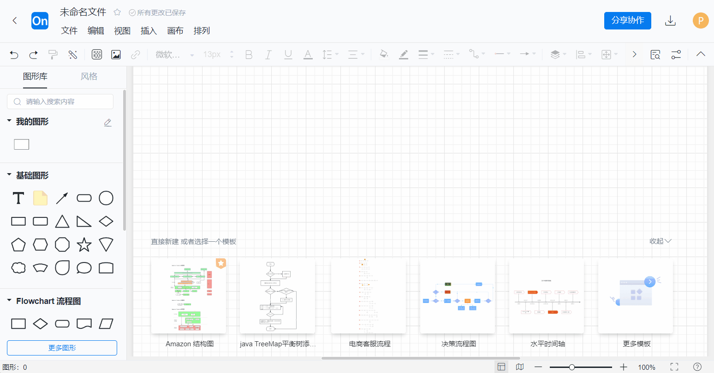
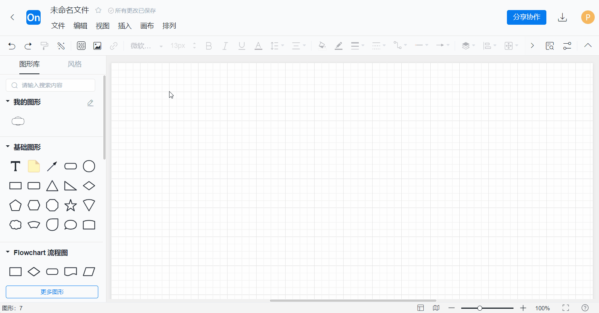

ProcessOn 流程图入门实战：从空白画布到可交付文件
从零带你用 ProcessOn 画出第一流程图——图形拖拽、快捷连线、一键美化、导出交付，五个步骤走完整个闭环，附新手容易翻车的三个坑和解法。
这篇教程走完，你能独立画出一张像样的流程图，并且把它导出到 PPT 或文档里交付。全程不涉及付费功能，免费账号够用。processon官网浏览器直接打开就能用，桌面端和移动端也都有客户端。
准备阶段
ProcessOn 是一款在线协作的流程图和思维导图工具，浏览器直接打开就能用，桌面端和移动端也都有客户端。你需要准备：
- 一个可用的 ProcessOn 账号（注册就能用，免费版有文件数量限制但足够练习）；
- Chrome 或 Edge 浏览器，版本尽量新一点——老版本浏览器偶尔会出现编辑器卡顿；
- 一张你想画的流程草图，或者一个明确的场景（比如「用户注册流程」「请假审批」「订单发货」）。
客户端安装包从官方下载拿。建议先用网页端练手，界面功能最全；熟练之后再考虑装客户端。
第一步：新建流程图并进入编辑器
登录后，在「我的文件」页面点击右上角的「新建」按钮，选择「流程图」。你会被带进一个空白画布的编辑器，同时画布下方会弹出一排推荐模板——模板可以跳过，后面画完结构再调样式不迟。

编辑器界面可以先认三块区域：左侧是图形库（各种形状都在里面），中间是无限延伸的画布（画到边缘会自动扩展，不用省地方），右侧是属性面板和工具栏。快捷键先记两个：T 添加文本，L 创建连线——这两个用得最多。
第二步：拖拽图形搭流程骨架
左侧图形库分组摆放，常用的基础图形集中在前几组：开始/结束用圆角矩形，处理步骤用普通矩形，判定节点用菱形，数据输入输出用平行四边形。别贪多，前期就用这四种，足够应付 80% 的流程。
具体操作：
- 从图形库按住鼠标左键，把图形拖到画布松手即创建；
- 选中画布上的某个图形后，它四周会出现一圈小
+图标——顺着流程方向点+，就会在对应方向自动创建同组的下一个图形，省得来回拖拽； - 想改图形大小，拖周围八个轴点；想旋转，点图形右上角的小图标；
- 画错了按
Delete删除，撤销是Ctrl+Z。
画的时候别急着调颜色、边框粗细这些外观——先把所有节点摆好、连线顺通，最后统一用格式刷或一键美化收尾。这是新手最容易踩的时间陷阱。
第三步：连线并调整走向
节点摆好之后，需要用箭头把它们串起来。连线有两种画法：
- 拖出连线：鼠标移到图形边缘，光标变成十字箭头后按住左键拖向另一个图形，松手就生成一条带方向的连线；
- 快捷点连：还是用刚才的
+图标——点它不仅会创建新图形，还自动带一条从当前节点指向新节点的连线，结构对的时候这是最快的方式。

连线的走向可以在中间加拐点：选中连线后在拐点处拖拽就能弯曲；或者双击连线手动插入额外拐点。默认的直角折线比斜线更规整，适合正式交付的图。
有一个细节注意：判定菱形出来的连线，分叉之后往往需要在连线上标注「是」「否」这类条件。选中连线后直接双击就能添加文字标签。
第四步：填写文字并一键美化
每个图形拖进来默认就有一个文本框，单击开始打字。文字的字号、颜色、对齐方式都在右侧属性面板里改。
结构和连线全部完成之后，别手动一个个调样式——选中所有元素（Ctrl+A），然后找顶部工具栏里的「一键美化」按钮。这个功能会自动对齐、统一配色、整理间距，几秒钟把一张乱糟糟的草稿变成能直接展示的成品。
格式刷也是好帮手：如果某个图形的样式你觉得好看，点格式刷在它上面刷一下，再点其他图形，就把样式复制过去了。想了解更多样式调整的细节，可以去processon文档翻配色和格式刷的专题。
第五步：导出到目标格式
画完的流程图要离开编辑器去往 PPT 或文档，右上角有个「导出为」按钮。ProcessOn 支持的导出格式挺全：
- PNG / SVG：插进 PPT 或文档用，SVG 是矢量格式，放大不糊；
- 高清 PDF：打印或正式归档用；
- POS：ProcessOn 自己的开放格式，想以后回来继续编辑就存一份；
- 另外如果画的是思维导图，还能直接导出 Word、PPT、Excel——导图直接变成汇报文档或任务清单，这个很实用。
免费账号有少量格式限制，但日常用到的 PNG、SVG、PDF 都是开放的，够用。
三个新手最容易翻车的卡点
卡点一：画布找不到自己画的东西了。 画布是无限的，有时候一拖就不知道漂到哪去了。双击鼠标滚轮可以快速回到所有元素的中心位置，或者用右下角的「适应画布」按钮一键把全部内容缩放到可见区域。
卡点二：连线总断、对不准。 连线要从图形边缘的锚点拖出，而不是从图形中心开始。把鼠标慢慢挪到边缘，出现小十字图标再按住拖，这样连线才会真正「粘」在图形上，图形移动时连线跟着走。
卡点三：想改已经画好的流程结构，牵一发动全身。 别直接删了重画——选中某段流程的起点，右键菜单里找「重新布局」，可以只对局部自动调整；或者按住 Shift 多选几个元素一起移动，保持相对位置。
往下还能玩什么
流程图之外，ProcessOn 的思维导图编辑器同样在线协作，支持给主题加图标、标签和任务信息，把一张头脑风暴图直接变成带负责人和进度的可跟踪清单。画完之后还能一键切换到演示模式，像 PPT 一样逐页讲——做项目汇报的时候挺好用。
关于 ProcessOn 的资料和文档，我整理了一份完整的仓库备份，GitHub 上的地址是主仓库，国内访问不稳定的时候可以用 Gitee 的镜像，GitCode 也同步了一份——三处内容一样，挑能打开的看就行。